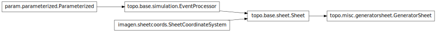

topo.misc.generatorsheet¶

Module¶
GeneratorSheet: a sheet with a pattern generator.
- class topo.misc.generatorsheet.GeneratorSheet(**params)[source]¶
Bases: topo.base.sheet.Sheet
Sheet for generating a series of 2D patterns.
Typically generates the patterns by choosing parameters from a random distribution, but can use any mechanism.
- param Boolean apply_output_fns (allow_None=False, bounds=(0, 1), constant=False, default=True, instantiate=False, pickle_default_value=True, precedence=None, readonly=False)
- Whether to apply the output_fn after computing an Activity matrix.
- param Number precedence (allow_None=False, bounds=None, constant=False, default=0.1, inclusive_bounds=(True, True), instantiate=False, pickle_default_value=True, precedence=None, readonly=False)
- Allows a sorting order for Sheets, e.g. in the GUI.
- param BoundingRegionParameter nominal_bounds (constant=True, default=BoundingBox(radius=0.5), instantiate=True, pickle_default_value=True, precedence=None, readonly=False)
- User-specified BoundingBox of the Sheet coordinate area covered by this Sheet. The left and right bounds–if specified–will always be observed, but the top and bottom bounds may be adjusted to ensure the density in the y direction is the same as the density in the x direction. In such a case, the top and bottom bounds are adjusted so that the center y point remains the same, and each bound is as close as possible to its specified value. The actual value of this Parameter is not adjusted, but the true bounds may be found from the ‘bounds’ attribute of this object.
- param Number row_precedence (allow_None=False, bounds=None, constant=False, default=0.5, inclusive_bounds=(True, True), instantiate=False, pickle_default_value=True, precedence=None, readonly=False)
- Allows grouping of Sheets before sorting precedence is applied, e.g. for two-dimensional plots in the GUI.
- param Boolean plastic (allow_None=False, bounds=(0, 1), constant=False, default=True, instantiate=False, pickle_default_value=True, precedence=None, readonly=False)
- Setting this to False tells the Sheet not to change its permanent state (e.g. any connection weights) based on incoming events.
- param Number nominal_density (allow_None=False, bounds=None, constant=True, default=10, inclusive_bounds=(True, True), instantiate=True, pickle_default_value=True, precedence=None, readonly=False)
- User-specified number of processing units per 1.0 distance horizontally or vertically in Sheet coordinates. The actual number may be different because of discretization; the matrix needs to tile the plane exactly, and for that to work the density might need to be adjusted. For instance, an area of 3x2 cannot have a density of 2 in each direction. The true density may be obtained from either the xdensity or ydensity attribute (since these are identical for a Sheet).
- param HookList output_fns (bounds=(0, None), constant=False, default=[], instantiate=True, pickle_default_value=True, precedence=None, readonly=False)
- Output function(s) to apply (if apply_output_fns is true) to this Sheet’s activity.
- param Number period (allow_None=False, bounds=(0, None), constant=True, default=1, inclusive_bounds=(False, True), instantiate=True, pickle_default_value=True, precedence=None, readonly=False)
- Delay (in Simulation time) between generating new input patterns.
- param Number phase (allow_None=False, bounds=None, constant=False, default=0.05, inclusive_bounds=(True, True), instantiate=False, pickle_default_value=True, precedence=None, readonly=False)
- Delay after the start of the Simulation (at time zero) before generating an input pattern. For a clocked, feedforward simulation, one would typically want to use a small nonzero phase and use delays less than the user-visible step size (typically 1.0), so that inputs are generated and processed before this step is complete.
- param NumericTuple layout_location (constant=False, default=(-1, -1), instantiate=False, length=2, pickle_default_value=True, precedence=-1, readonly=False)
- Location for this Sheet in an arbitrary pixel-based space in which Sheets can be laid out for visualization.
- param ClassSelector input_generator (allow_None=False, constant=False, default=<Constant Constant00040>, instantiate=True, pickle_default_value=True, precedence=None, readonly=False)
- Specifies a particular PatternGenerator type to use when creating patterns.
- pop_input_generator()[source]¶
Discard the current input_generator, and retrieve the previous one from the stack.
Warns if no input_generator is available on the stack.
- set_input_generator(new_ig, push_existing=False)[source]¶
Set the input_generator, overwriting the existing one by default.
If push_existing is false, the existing input_generator is discarded permanently. Otherwise, the existing one is put onto a stack, and can later be restored by calling pop_input_generator.